進度 0%
Ch16 — Deep Metric Learning & Self-Supervised Learning
從 reconstruction autoencoder、contrastive / triplet loss 到 SimCLR / BYOL / Barlow Twins
章節導覽
1 全章地圖：deep metric learning + SSL 2 Reconstruction autoencoder 2.3 Denoising autoencoder 2.4 Metric learning by reconstruction AE 3 Deep metric learning by classification loss 4.1 Siamese 與 triplet networks 4.2 Pairs 與 triplets of data points 4.3 Siamese network 實作 4.5 Contrastive loss（含 generalized） 4.6 Triplet loss 4.7 Triplet mining（batch-all / batch-hard / batch-semi-hard） 4.8 Triplet sampling 5.1 SSL 核心思想 5.2 Augmentation for creating positive samples 5.3 Negative samples 的採樣衝突分析 5.4 SSL network 架構 5.6.1 SimCLR：InfoNCE loss 5.6.2 BYOL：momentum encoder + stop-gradient 5.6.4 Barlow Twins：cross-correlation matrix 6 結論：metric learning 與 SSL 的現代地位
1
全章地圖：deep metric learning + SSL
−
Metric Learning + SSL
（無 label 學表示）
§2 AE / DAE（早期）
§4 Siamese / Contrastive
§5 SSL：SimCLR / BYOL
§5.6 Barlow / VICReg
4 條主軸，本章按此順序展開
示意圖解（inline SVG）。
本章談一個核心問題：沒有 label 時，神經網路能學到有用的特徵表示嗎？ Deep metric learning + Self-supervised Learning (SSL) 給出肯定答案——透過「拉近同類、拉遠異類」的目標函式，網路學到的 embedding 可用於分類、檢索、生成。
原文用一個生動例子：人臉辨識（verification）——給兩張臉，判斷是否同一人。直覺做法是直接比對像素，但光照/角度/表情變化太大。**更好的做法是學一個 embedding 空間 $f(x)\in\mathbb{R}^p$**，讓同一人距離近、不同人距離遠。
本章三層架構：
§2 Reconstruction autoencoder ：早期非監督表示學習的嘗試。Encoder 編碼、decoder 重建。Under-complete 可學 metric、over-complete 加噪聲成 denoising AE。§4 Siamese networks ：共享權重的孿生子網路，用 contrastive/triplet loss 學 embedding。Fisher 判別分析思想在深度學習時代的復活。§5 Self-supervised learning (SSL) ：不用人工 label，用「資料增強 + 對比學習」自監督。SimCLR、BYOL、SimSiam、Barlow Twins、VICReg 五大方法。
SSL 已成為 2025 年 pretraining 主流範式（MAE、CLIP 都是延伸）。metric learning 的 loss 函式則是 robust 表徵的基礎。
祕笈 教授祕笈：全章地圖 — deep metric learning + SSL
2
Reconstruction autoencoder
−
Autoencoder 兩種關鍵變體
Under-complete
code 維度 $p < d$
逼網路學「壓縮表示」
線性 → PCA
用於 metric learning
✓ 學語意
Over-complete
code 維度 $p > d$
無約束 → 抄寫（identity）
需要加噪聲（DAE）
強制學語意
✓ +噪聲 = 有意義
示意圖解（inline SVG）。
Reconstruction autoencoder 是最早期 的表示學習模型：encoder $E$ 編碼輸入 $x$ 為 latent code $f(x)$，decoder $D$ 從 code 重建輸入 $\hat x$。Loss 為重建誤差：
$$\min_\theta \sum_{i=1}^b d(x_i, \hat x_i) + \lambda\Omega(\theta)$$
其中 $d(\cdot,\cdot)$ 是 distance metric（常用 MSE），$\Omega$ 是 weight regularization（見 Chap. 5）。
兩種關鍵變體：
Under-complete ：code 維度 $p < d$。逼網路學「壓縮表示」——直接拿來做 metric learning（如 PCA）與降維。Over-complete ：$p > d$。若無約束，網路只會「抄寫」輸入（identity function）→ 完全無用。
原文特別指出：若所有 activation 都是線性，under-complete AE 退化成 PCA 。Nonlinear activation 才能學 non-trivial metric。
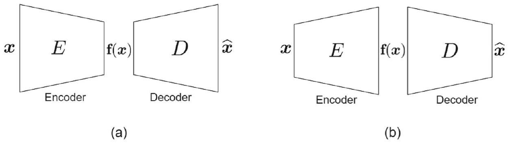
雖然 AE 不算嚴格的 metric learning，但它是 metric learning 的歷史起點 ，影響後續 Siamese、SSL 的設計。
祕笈 教授祕笈：Reconstruction autoencoder
2.3
Denoising autoencoder
−
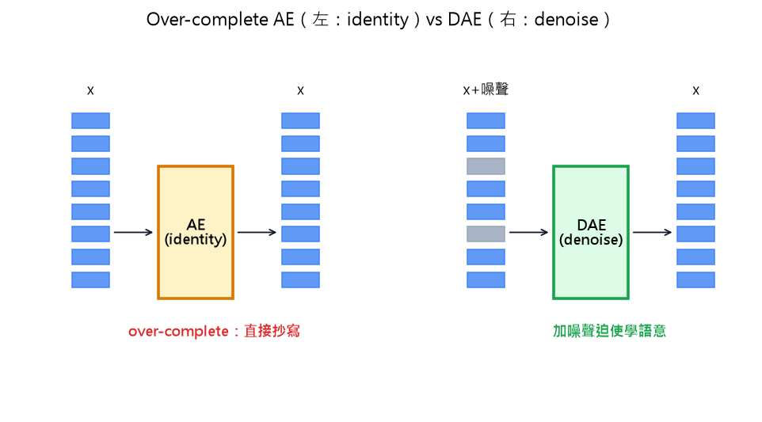
示意圖解：請對照 B0 準則（遮住文字仍能看出因果/反直覺）。
🤖 AI 生圖可用：重繪此示意圖的提示詞（結構化）
WHAT: 左右兩子圖對比。左：over-complete AE（8 個藍色方塊組成的「輸入」→ 黃色「AE identity」方塊 → 8 個藍色方塊「輸出」，標「直接抄寫」紅色）。右：DAE（8 個方塊含 2 個灰色噪聲 → 綠色 DAE 方塊 → 8 個乾淨藍色方塊，標「加噪聲迫使學語意」綠色）。
WHY: 凸顯 over-complete AE 的「identity 抄寫」缺陷 vs DAE「加噪聲強迫學語意」的核心思想。
MUST show: (1) 左右對比布局；(2) 灰色噪聲方塊；(3) 黃色 vs 綠色 AE 方塊；(4) 紅色「直接抄寫」標註；(5) 綠色「加噪聲」標註。
AVOID: 不要用 3D、不要省略對比標籤、不要把左圖右圖混為一張。
STYLE: clean educational diagram, white background, 標題「Over-complete AE（左：identity）vs DAE（右：denoise）」。
互動 demo：Denoising autoencoder：加噪聲 → 重建
DAE loss：$\hat x = D(E(x+\varepsilon))$，$L = \|\hat x - x\|^2$。
怎麼操作： 拖動 $\sigma$ 滑桿改變噪聲強度。
觀察什麼： $\sigma$ 變大時，灰色噪聲方塊變多，DAE 重建難度增加。
正確基準： $\sigma=0$：DAE 直接抄寫（變成 identity）；$\sigma$ 越大：DAE 必須學「過濾」能力。
Over-complete AE 的問題：無約束時只會抄寫輸入 （identity function）。為避免，denoising autoencoder（DAE） 對輸入加噪聲 $\varepsilon$，強迫網路學「去噪後的乾淨 $x$」：
$$\hat x = D(E(x + \varepsilon))$$
Loss 仍是 $\|\hat x - x\|^2$（相對乾淨版本，不是 noisy 版本）。
我打個比方。標準 AE 像「背課文」——每個字都記住，但沒理解。DAE 像「聽懂老師講課（夾雜雜訊）然後筆記」——必須理解才能過濾雜訊 ，所以學到語意而非死記。
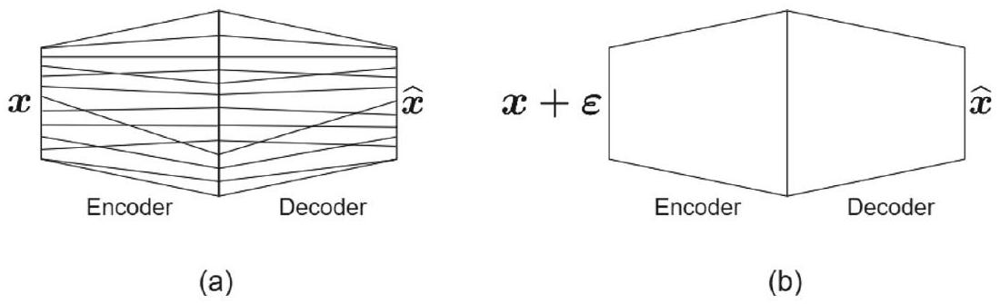
DAE 的訓練不只要「重建」，還要「過濾噪聲」——這迫使 encoder 學有意義的特徵（不是 pixel-wise identity）。
實務：噪聲類型多樣（Gaussian noise、masking noise、dropout 噪聲 = denoising AE 的隨機版本）。
祕笈 教授祕笈：Denoising autoencoder
2.4
Metric learning by reconstruction AE
−
NN = 降維 + kernel method 的串接
每層看 $d_1 \to d_2$：若 $d_1 \ge d_2$ 是降維，$d_1 < d_2$ 是 kernel
$d_1=64$
input
Layer 1
64→32
降維
Layer 2
32→64
kernel
Layer 3
64→8
降維
$p=8$
串接 = 降維 ⊕ kernel ⊕ 降維 → 學 metric embedding
示意圖解（inline SVG）。
Under-complete reconstruction AE 可用於 metric learning，特別是當 code 維度 $p \ll d$ 時——中間 code 層就是 metric embedding space。
Loss（式 3）：
$$\min_\theta \sum_{i=1}^b d(x_i, \hat x_i) + \lambda\Omega(\theta)$$
訓練後，code $f(x) = E(x)$ 就是 metric embedding。
原文關鍵洞察：NN 視為 dimensionality reduction + kernel methods 的串接 。每層若 $d_1 \ge d_2$ 就是降維（feature extraction），若 $d_1 < d_2$ 就是 kernel method（map 到高維 RKHS）。Nonlinear activation 提供非線性降維；線性 activation 就是線性投影。
兩種視角統一：NN = 串接的「降維 + 升維」+ 各層自己的 feature learning。
祕笈 教授祕笈：Metric learning by reconstruction AE
3
Deep metric learning by classification loss
−
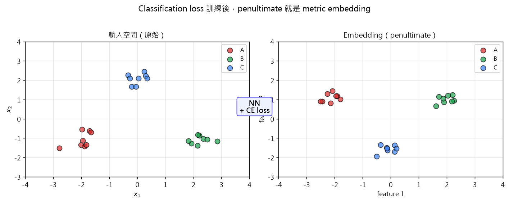
示意圖解：請對照 B0 準則（遮住文字仍能看出因果/反直覺）。
🤖 AI 生圖可用：重繪此示意圖的提示詞（結構化）
WHAT: 左右兩子圖，散點圖。左：輸入空間三群（A 紅、B 綠、C 藍）隨機散佈。右：embedding 空間同三群但更聚攏。中間 teal 文字「NN + CE loss」標示中間的神經網路。
WHY: 凸顯 cross-entropy 訓練的網路會自動把同類拉近、異類推遠，penultimate 就是 metric embedding。
MUST show: (1) 三群不同顏色散點（輸入 vs embedding）；(2) embedding 群比輸入群更聚攏；(3) 中間 NN 標籤；(4) 座標軸標籤。
AVOID: 不要把兩子圖疊合、不要用相同尺度、不要省略群標籤。
STYLE: clean scientific plot, white background, 標題「Classification loss 訓練後，penultimate 就是 metric embedding」。
互動 demo：Cross-entropy → embedding 聚攏
CE loss 訓練：$\min_\theta -\sum_i y_i\log\hat y_i$。
怎麼操作： 拖動 epoch 滑桿觀察訓練過程。
觀察什麼： epoch 增加：3 群 (A/B/C) 散點越來越聚攏，內聚力增強。
正確基準： epoch=0：σ=1.5 散亂；epoch=100：σ≈0 同類完全聚攏，類間分離。
更簡單的 metric learning 思路：直接用 classification loss 訓練網路，最後一層的特徵就是 embedding 。
具體做法：
設計網路：$x \to \text{penultimate layer} \to \text{classification layer}$。
用 cross-entropy（或其他 classification loss）訓練。
訓練完成後，把 classification layer 丟掉 ，penultimate layer 的輸出 $f(x)$ 就是 embedding。
原理：cross-entropy 訓練迫使 penultimate layer 的特徵對類別有判別力——而判別力就意味著「同類相近、異類相遠」，即 metric learning 的目標。
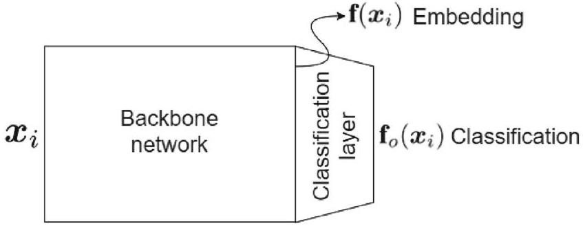
優點：簡單 ，不需要 special loss（triplet/contrastive），直接用現成的 classification 訓練流程。
限制：需要 label 才能訓練（supervised）。若無 label，必須改用 SSL（§5）。
祕笈 教授祕笈：Deep metric learning by classification
4.1
Siamese 與 triplet networks
−
Siamese 與 Triplet Networks
多個子網路共享權重 → 拉近 positive / 推遠 negative
Siamese（2 個子網路）
f(x_a)
f(x_p)
↕ 共享權重
Triplet（3 個子網路）
f(x_a)
f(x_p)
f(x_n)
↕ 共享權重
Fisher 思想復活：最小化類內方差、最大化類間方差
示意圖解（inline SVG）。
Siamese network（孿生網路）是 deep metric learning 的經典模型：多個子網路共享權重 ，每個子網路處理一個輸入點，輸出其 embedding。
數量：通常 2 個或 3 個。3 個的叫 triplet network。
訓練目標：同類點 embedding 拉近，異類點 embedding 拉遠 ——這就是 Fisher 判別分析（1936）的深度學習版。
應用：人臉驗證（Facenet）、person re-identification、signature verification、image retrieval。
關鍵設計選擇：backbone（CNN / MLP）、embedding 維度 $p$、loss 函式（contrastive / triplet）、batch size。
祕笈 教授祕笈：Siamese 與 triplet networks
4.2
Pairs 與 triplets of data points
−
Pairs 與 Triplets 三角色
Anchor
基準點
Positive
同類（拉近）
Negative
異類（推遠）
Pair (Siamese)
(x_a, x_p) 或 (x_a, x_n)
Triplet
(x_a, x_p, x_n)
有 label → 用 class；無 label → 用 augmentation（§5 SSL）
示意圖解（inline SVG）。
Siamese network 不處理單一資料點，必須以 pair 或 triplet 形式輸入 。
三個角色：
Anchor $\boldsymbol{x}_i^a$：基準點。Positive $\boldsymbol{x}_i^p$：與 anchor 同類（similar）。Negative $\boldsymbol{x}_i^n$：與 anchor 異類（dissimilar）。
Pair（2 個子網路）：anchor-positive 或 anchor-negative pair。
Triplet（3 個子網路）：(anchor, positive, negative) 三元組。
若 dataset 有 label：positive 從同類抽、negative 從異類抽。
若 dataset 無 label：用 augmentation 生成 positive（同一資料的不同增強視為 positive），其他視為 negative（§5 SSL）。
祕笈 教授祕笈：Pairs 與 triplets of data points
Siamese 兩種實作
(1) 多個子網路 in memory
f_a
f_p
f_n
更新後 copy 權重
✓ 並行
✗ 記憶體高
(2) 單一子網路 + 序列
f (shared)
x_a → x_p → x_n
共享權重自動成立
✗ 序列慢
✓ 記憶體省
實務推薦 (2)：現代框架易實作，batch 內其他樣本可共享
示意圖解（inline SVG）。
兩種實作方式：
多個子網路 in memory ：每次 forward 把 pair/triplet 餵給不同子網路，loss 算完只 backprop 其中一個子網路的權重，再把權重複製到其他子網路 。優點：每個子網路並行；缺點：記憶體高。單一子網路 + 序列 forward ：每次只 forward 一個點，累積到 triplet 完整才算 loss、backprop、更新一次。共享權重自動成立 （因為是同一個網路）。優點：記憶體省；缺點：序列慢。
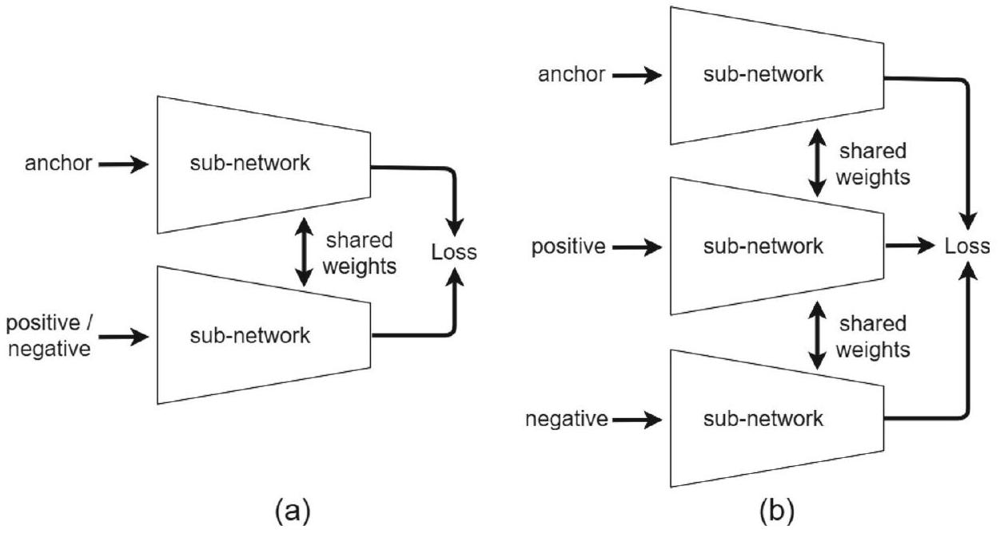
實務建議：第二種（單一子網路） ——pair/triplet 只有 2-3 個點，batch 內其他點可共享計算；且現代框架（PyTorch）易於實作。
注意：測試時只 forward 一次（取 embedding），不需要 pair。
祕笈 教授祕笈：Siamese network 實作
4.5
Contrastive loss（含 generalized）
−
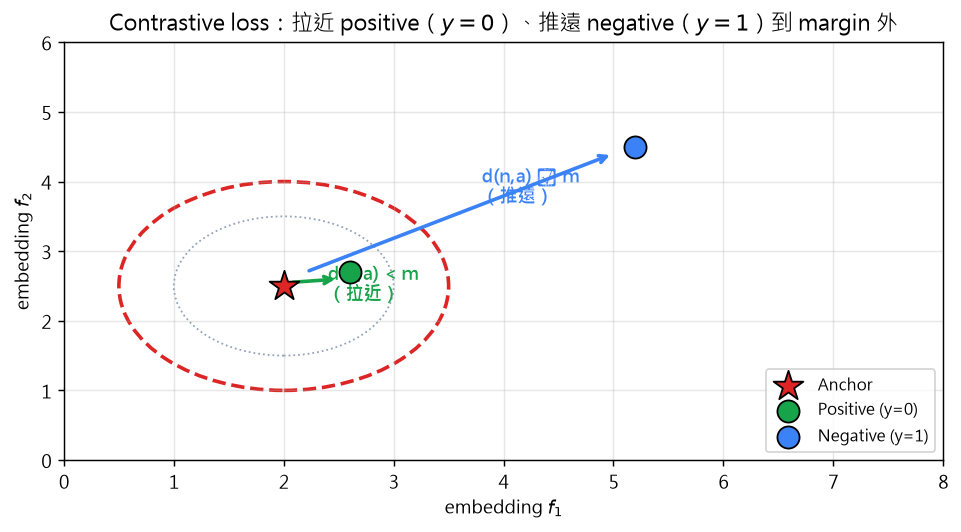
示意圖解：請對照 B0 準則（遮住文字仍能看出因果/反直覺）。
🤖 AI 生圖可用：重繪此示意圖的提示詞（結構化）
WHAT: 2D 座標平面，中心 anchor（紅色星），旁邊 positive（綠色圓，在 margin 內），負類（藍色方塊，在 margin 外）。虛線圓 = 搜尋空間，灰色虛線圓 = margin。
WHY: 凸顯 contrastive loss 兩項：拉近 positive 到 anchor、推遠 negative 到 margin 外。
MUST show: (1) 中心 anchor 標記；(2) positive 在 margin 內、negative 在 margin 外；(3) 兩個虛線圓（搜尋空間 + margin）；(4) 箭頭標示拉近/推遠方向。
AVOID: 不要用 3D、不要把 anchor 與 positive 標反、不要省略 margin 視覺化。
STYLE: clean scientific plot, white background, 標題含「margin 拉近/推遠」。
互動 demo：Contrastive loss 計算
$\mathcal{L}=\sum_i(1-y_i)d_i + y_i[-d_i+m]_+$
怎麼操作： 拖動 $d$、$y$（0=similar, 1=dissimilar）、$m$ 滑桿。
觀察什麼： $d$ 影響兩個項；$y$ 切換哪一項貢獻；$m$ 控制 dissimilar 的目標距離。
正確基準： $y=0, d=0.5$：loss=0.5；$y=1, d=0.5, m=1$：loss=0.5（已滿足 margin）；$y=1, d=0.3, m=1$：loss=0.7（推遠）。
Contrastive loss 是 Siamese network 最常用的 loss 之一：
$$\min_\theta \sum_{i=1}^b \left[(1-y_i) \cdot d(f(x_i^1), f(x_i^2)) + y_i \cdot [-d(f(x_i^1), f(x_i^2)) + m]_+\right]$$
其中：
$y_i = 0$（similar pair）：第一項 $d$ 最小化（拉近）。
$y_i = 1$（dissimilar pair）：第二項 hinge $[-d+m]_+$ 鼓勵 $d \ge m$（margin 外的距離）。
$m$ 是 margin，$[_+] = \max(\cdot, 0)$。
Generalized contrastive loss ：把 $y_i\in\{0, 1\}$ 換成 soft measure $\psi_i \in [0, 1]$：
$$\psi_i = \tfrac{1}{2}(1 - \cos(x_i^1, x_i^2))$$
loss 形式不變，但 $\psi_i$ 連續值允許「部分相似」。
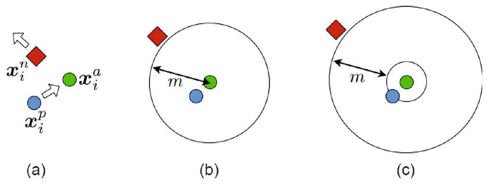
祕笈 教授祕笈：Contrastive loss（含 generalized）
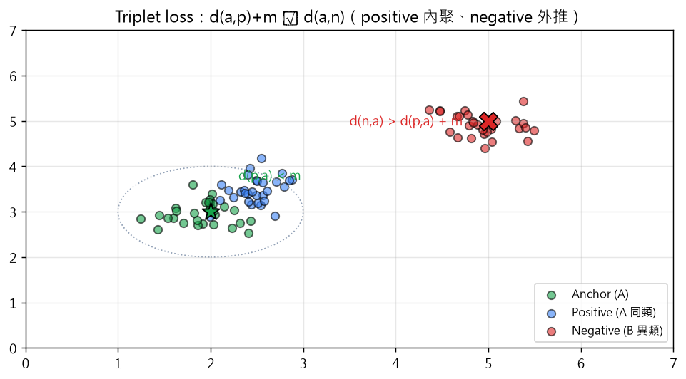
示意圖解：請對照 B0 準則（遮住文字仍能看出因果/反直覺）。
🤖 AI 生圖可用：重繪此示意圖的提示詞（結構化）
WHAT: 2D embedding 空間，30 個 anchor（綠）圍繞 anchor 星、30 個 positive（藍）靠近 anchor、30 個 negative（紅）遠離 anchor。Anchor 與 negative 用星/X 大標。灰色虛線圓 = margin 邊界。
WHY: 凸顯 triplet loss 達成的條件：d(anchor, positive) + margin ≤ d(anchor, negative)。
MUST show: (1) 三群散點（綠 anchor、藍 positive、紅 negative）；(2) Anchor 與 negative 用大標記（star、X）；(3) 灰色虛線 margin 圓；(4) 標籤 d(p,a) < m 與 d(n,a) > d(p,a) + m。
AVOID: 不要把 anchor 與 positive 標反、不要省略 margin 視覺化。
STYLE: clean scientific plot, white background, 標題「Triplet loss：positive 內聚、negative 外推」。
互動 demo：Triplet loss 計算
$\mathcal{L}=\sum_i[d(f(x^a),f(x^p)) - d(f(x^a),f(x^n)) + m]_+$
怎麼操作： 拖動 $d(a,p)$、$d(a,n)$、$m$ 滑桿。
觀察什麼： $d(a,n)$ 越大、$d(a,p)$ 越小、$m$ 越大 → loss 越負（條件越滿足）。
正確基準： $d(a,p)=1, d(a,n)=3, m=1$：loss=0（條件滿足）；$d(a,p)=2, d(a,n)=2, m=1$：loss=1（未滿足）。
Triplet loss 用三元組（anchor, positive, negative），比 contrastive 更靈活（同時考慮兩種關係）：
$$\min_\theta \sum_{i=1}^b [d(f(x_i^a), f(x_i^p)) - d(f(x_i^a), f(x_i^n)) + m]_+$$
直覺：anchor 與 positive 距離 < anchor 與 negative 距離 - margin $m$ 。
hinge loss $[\cdot]_+$ 保證 loss $\ge 0$；若條件已滿足（positive 近、negative 遠），loss = 0 不貢獻梯度。
達成的條件：
$$d(f(x_i^a), f(x_i^p)) + m \le d(f(x_i^a), f(x_i^n)) \quad \forall i$$
備註：triplet loss 與 spectral large margin metric learning 的目標函式相關；可作為 cross-entropy 的 regularizer 提升 adversarial robustness。
祕笈 教授祕笈：Triplet loss
4.7
Triplet mining（batch-all / batch-hard / batch-semi-hard）
−
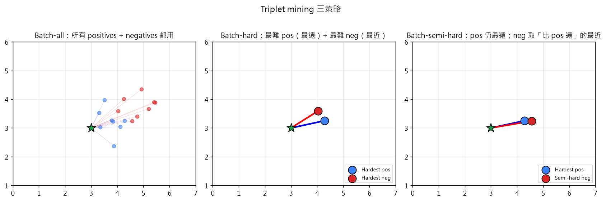
示意圖解：請對照 B0 準則（遮住文字仍能看出因果/反直覺）。
🤖 AI 生圖可用：重繪此示意圖的提示詞（結構化）
WHAT: 1×3 子圖三策略。左 batch-all：anchor 與所有 positives/negatives 都連線。中 batch-hard：anchor 只連「最難 pos（最遠）+ 最難 neg（最近）」。右 batch-semi-hard：pos 仍最遠，neg 取「比 pos 遠的最近」。
WHY: 凸顯三種 mining 策略的差異：all 用盡資訊、hard 專注難例、semi-hard 避開 trivial 三元組。
MUST show: (1) 三個子圖標題清楚；(2) anchor 用大星；(3) 不同子圖的連線密度與重點樣本不同；(4) 圖例標示「Hardest pos」「Semi-hard neg」。
AVOID: 不要用 2D 投影比較 3 種策略、不要省略標題。
STYLE: clean scientific plot, white background, 整體標題「Triplet mining 三策略」。
互動 demo：Batch-hard mining：最難正負對
Batch-hard：$\max_{j\in pos} d - \min_{k\in neg} d + m$
怎麼操作： 觀察畫面：三群散點（綠 anchor、藍 pos、紅 neg），高亮標示 hardest 對。
觀察什麼： 最難 pos（藍框）= 同類最遠；最難 neg（紅框）= 異類最近。
正確基準： anchor 同類距 1.5/2.3/3.0，hardest=3.0；異類距 5.2/6.0/4.8，hardest=4.8。
Triplet mining 決定每個 anchor 配哪個 positive 和 negative 。三種主流：
1. Batch-all （Hermans et al. 2017）：mini-batch 中所有同類點都當 positive、所有異類都當 negative：
$$\min_\theta \sum_{i=1}^b \sum_{x_j \in \mathcal{X}_{c(x_i)}} \sum_{x_k \in \mathcal{X} \setminus \mathcal{X}_{c(x_i)}} [d(f(x_i), f(x_j)) - d(f(x_i), f(x_k)) + m]_+$$
優點：用盡所有資訊；缺點：很多三元組 loss = 0，浪費計算。
2. Batch-hard （Hermans et al. 2017）：每個 anchor 配最難的 positive （同類中最遠）+ 最難的 negative （異類中最近）：
$$\min_\theta \sum_{i=1}^b [\max_{x_j \in \mathcal{X}_{c(x_i)}} d(f(x_i), f(x_j)) - \min_{x_k \in \mathcal{X} \setminus \mathcal{X}_{c(x_i)}} d(f(x_i), f(x_k)) + m]_+$$
優點：專注難例、訓練訊號強；缺點：outlier 影響大。
3. Batch-semi-hard （Schroff et al. 2015）：positive 仍取所有同類，negative 取「比 positive 遠 的最近異類」：
$$\min_\theta \sum_i \sum_{x_j \in \mathcal{X}_{c(x_i)}} [d(f(x_i), f(x_j)) - \min_{x_k: d(f(x_i), x_k) > d(f(x_i), x_j)} d(f(x_i), f(x_k)) + m]_+$$
優點：避開 trivially satisfied 的三元組（positive 已經比 negative 近太多），又有資訊梯度。
實務：Batch-semi-hard 與 batch-hard 是常用 default （Facenet 用 semi-hard）。
祕笈 教授祕笈：Triplet mining（batch-all / batch-hard / batch-semi-hard）
Triplet Sampling 三策略
① 隨機抽類別
每 batch 隨機選 $c$ 個類
各抽若干樣本
保證類別多樣
✓ 簡單、常用
② 極端距離
先 forward 找 embedding
刻意選極端 anchor/pos/neg
distance-weighted
✓ 難例優先
③ 機率分佈
依預定義分佈抽
如 Bayesian updating
stochastic
✓ 多樣性
先 sampling 構成 batch，再 mining 從 batch 內選 triplet
示意圖解（inline SVG）。
Triplet mining 從「已選的 batch 」中決定如何取三元組；triplet sampling 則決定如何構成 batch 本身。兩者正交：mining 決定 batch 內的配對、sampling 決定 batch 怎麼抽。
三類 sampling 策略：
隨機抽類別 ：每個 batch 從隨機選的 $c$ 個類別各抽若干樣本（PK 採樣）。保證 batch 內類別多樣。極端距離採樣 ：先 forward 所有樣本找 embedding，再刻意選「距離極端」的 anchor/positive/negative。分佈採樣 ：按預定義分佈（如距離加權）採樣——distance weighted sampling、Bayesian triplet sampling。
與 mining 互補：先 sampling 構成 batch、再 mining 從 batch 內選 triplet。
實務：Facenet 結合 PK sampling + semi-hard mining = 經典組合。
祕笈 教授祕笈：Triplet sampling
SSL 核心思想：自己生 label
同類相近、異類相遠（Fisher） + augmentation 生 positive pair
1. 同類相近
目標：
拉近 positive、
推遠 negative
2. 增強生 label
同資料：
rotate / crop / blur
視為 positive
3. 不用 label
無人工標註：
從資料自己
學 embedding
SSL 三大支柱：loss 函式（Siamese）+ 架構（NN）+ label 來源（aug）
示意圖解（inline SVG）。
Self-supervised learning (SSL) 的核心想法：不用人工 label，自己產生 label 。
三個關鍵：
同類相近、異類相遠 仍是 metric learning 目標（kp 6–10 的精神）。Label 從何來？ 從「同一資料的不同增強」生成 positive pair——「同一張狗照片，旋轉後仍是狗」。Negative pair 從何來？ 其他資料（或 batch 內其他樣本）視為 negative。
SSL 與 Siamese 的關係：Siamese 是 SSL 的網路架構，contrastive/triplet loss 是 SSL 的 loss 函式 。SSL 加上「augmentation 生成 label」這步就形成完整系統。
驚人事實：SSL 很多時候能超越 supervised （SimCLR 2020）——原因：data augmentation 教授網路學「不變性」，泛化更好。
祕笈 教授祕笈：SSL 核心思想
5.2
Augmentation for creating positive samples
−
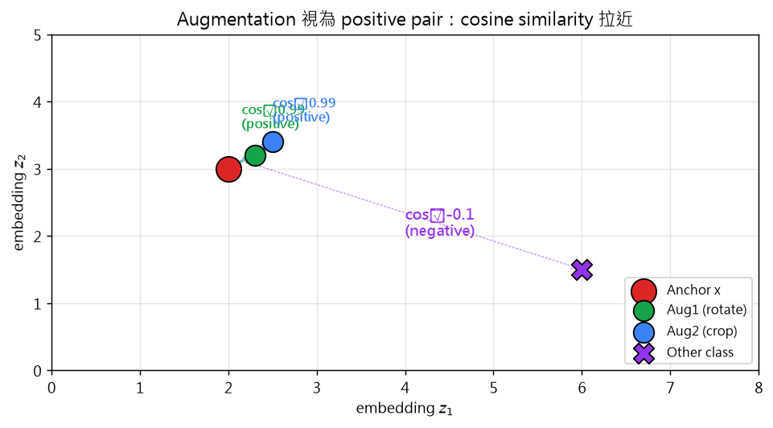
示意圖解：請對照 B0 準則（遮住文字仍能看出因果/反直覺）。
🤖 AI 生圖可用：重繪此示意圖的提示詞（結構化）
WHAT: 2D embedding 空間，中央 anchor x（紅色大圓），周圍兩個 augmentation 後的向量（綠 Aug1、藍 Aug2），遠方另一個完全不同的紫色 X。三組之間用箭頭連線，標 cosine similarity 值。
WHY: 凸顯 SSL 核心機制：augmentation 後的向量 cosine 接近 0.99（positive），不同類別的 cosine 接近 -0.1（negative）。
MUST show: (1) 3 個 augmentation 後向量 + 1 個 other class；(2) cosine 相似度標籤（≈0.99 vs ≈-0.1）；(3) 顏色區分（紅/綠/藍/紫）。
AVOID: 不要把 anchor 與其他類混淆、不要省略相似度標籤。
STYLE: clean scientific plot, white background, 標題「Augmentation 視為 positive pair」。
互動 demo：Augmentation 的 cosine similarity
同資料的兩個 augmentation：$\cos(z_1, z_2)$
怎麼操作： 拖動旋轉角度滑桿。
觀察什麼： 角度變大 → 兩個 augmentation 的 cosine similarity 下降。
正確基準： 角度 0.2：cos≈0.99（strong positive）；角度 1.5：cos≈0.07（弱正相關）。
SSL 不用 label，但用 augmentation 自己生 label ：
$$x_i = \mathcal{A}(x_\ell), \quad x_i' = \mathcal{A}'(x_\ell)$$
其中 $\mathcal{A}$、$\mathcal{A}'$ 是兩種 augmentation（rotation、crop、scale、color jitter 等），$x_\ell$ 是同一原始資料的兩個不同增強視為 positive pair。
常用 augmentation（視資料類型）：
影像 ：random crop、color jitter、Gaussian blur、rotation、horizontal flip、solarization。文字 ：word deletion、synonym replacement、back-translation。音訊 ：pitch shift、time stretch、additive noise。
設計原則：augmentation 要保留語意、改變表面 （旋轉同張狗仍是狗、不是另一張）。
原文關鍵洞察：data augmentation 教授網路學「不變性」 ——所以 SSL 泛化有時甚至超過 supervised。
祕笈 教授祕笈：Augmentation for creating positive samples
5.3
Negative samples 的採樣衝突分析
−
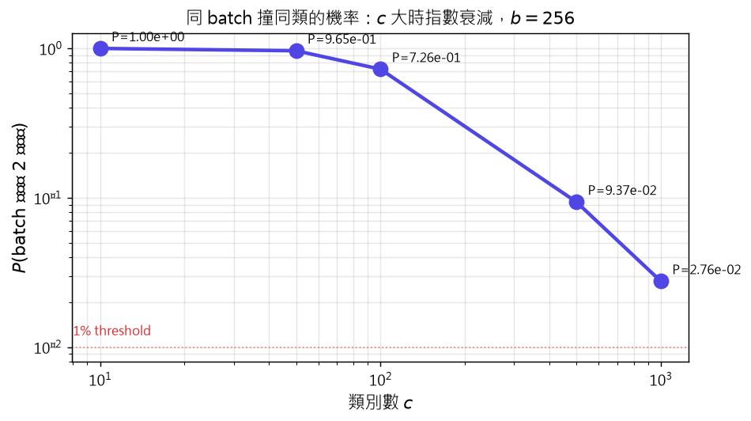
示意圖解：請對照 B0 準則（遮住文字仍能看出因果/反直覺）。
🤖 AI 生圖可用：重繪此示意圖的提示詞（結構化）
WHAT: 對數刻度 x 軸（類別數 c 從 10 到 1000）、對數刻度 y 軸（撞同類的機率）。5 個 indigo 圓點，隨 c 增加指數衰減。1% 紅色水平參考線。
WHY: 凸顯「大 c 時負類假設安全」的事實：c=1000 時 P < 0.01，幾乎可忽略 false negative。
MUST show: (1) 對數 x 軸、對數 y 軸；(2) 5 個 c 點（10, 50, 100, 500, 1000）；(3) 1% 紅色參考線；(4) 機率數值標註。
AVOID: 不要用線性 x 軸、不要省略 1% threshold。
STYLE: clean scientific plot, white background, 標題「同 batch 撞同類的機率」。
互動 demo：Batch 撞同類的機率
$\mathbb{P}(\text{≥2 同類})=\sum_{i=2}^b\binom{b}{i}(1/c)^i(1-1/c)^{b-i}$
怎麼操作： 拖動類別數 $c$、batch size $b$ 滑桿。
觀察什麼： $c$ 大、$b$ 小 → 同類撞到的機率低 → 負類假設安全。
正確基準： $c=100, b=256$：$P\approx 0.10$；$c=1000, b=256$：$P\approx 0.003$。
SSL 假設 batch 內不同 index 的樣本「大概率屬於不同類別 」，可以當 negative。這在大類別數 $c$ 資料集上成立：
$$\mathbb{P}(\text{同 batch 至少 $k$ 個同類}) = \sum_{i=k}^b \binom{b}{i}(1/c)^i(1-1/c)^{b-i}$$
其中 $c$ 是類別總數。當 $c \gg b$（batch size 遠小於類別數）時，此概率指數衰減 ，可忽略。
但 $c$ 小時，風險變大：batch 內可能抽到多個同類樣本，卻被當 negative 互推——稱為 false negative ，會傷害表示品質。
例外策略：
BYOL、SimSiam 不需 negative （避免此問題）。Few-shot learning （$c$ 很小）常用 prototype-based method。MoCo / memory bank ：擴大 negative pool 涵蓋更多類別。
實務：$c$ 大（ImageNet 1000 類）+ 合理 batch size（256–4096）→ 假設成立。
祕笈 教授祕笈：Negative samples（採樣衝突分析）
SSL 典型架構：encoder + projector
測試時 projector 丟掉，只用 encoder 輸出作為 embedding
x
資料
encoder $f_\theta$
→ y ∈ ℝ^q
projector $h_\phi$
→ z ∈ ℝ^p
Loss
測試丟
ℝ^d
ℝ^q
ℝ^p
loss
projector 可 expander（p≫q，kernel 化）或 reducer（p<q，壓縮）
示意圖解（inline SVG）。
典型 SSL pipeline：
$$\text{encoder: } f_\theta: \mathbb{R}^d \to \mathbb{R}^q, \quad y = f_\theta(x)$$
$$\text{projector: } h_\phi: \mathbb{R}^q \to \mathbb{R}^p, \quad z = h_\phi(y)$$
兩種 projector 設計：
Expander ：$p \gg q$。如 kernel method，把編碼映到高維 RKHS 讓非線性結構更線性。Reducer ：$p < q$。如降維，做 feature compression。
Loss 函式用 $z$（已 normalization），但測試時 projector 丟掉，只用 encoder 輸出 $y$ 作為最終 embedding ——這是 SSL 的關鍵設計（projector 是訓練輔具，不是產品）。
Normalization 兩種：
Feature-wise ：每個 embedding 向量 normalize 到單位長度（SimCLR、BYOL）。Batch-wise ：整個 batch 統計 normalize（Barlow Twins）。
祕笈 教授祕笈：SSL network 架構
5.6.1
SimCLR：InfoNCE loss
−
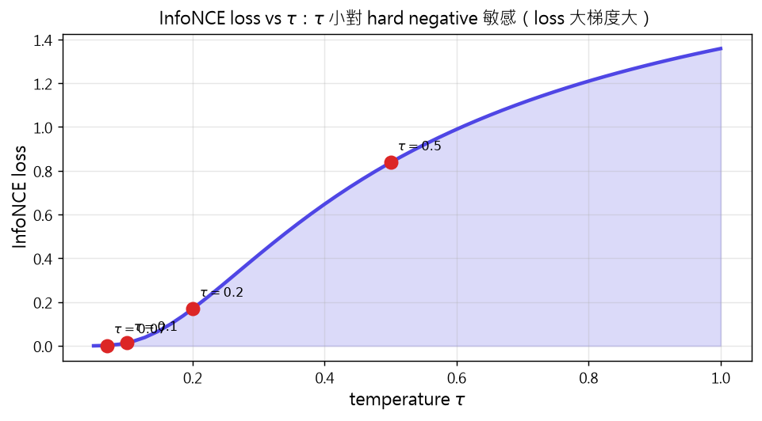
示意圖解：請對照 B0 準則（遮住文字仍能看出因果/反直覺）。
🤖 AI 生圖可用：重繪此示意圖的提示詞（結構化）
WHAT: 2D 圖，x 軸 temperature τ（0.05–1.0），y 軸 InfoNCE loss。teal 曲線隨 τ 增加而下降。4 個紅色圓點標示常用 τ（0.07, 0.1, 0.2, 0.5）。
WHY: 凸顯 temperature 對 InfoNCE loss 的影響：τ 小對 hard negative 敏感（loss 大梯度大），τ 大則 loss 平緩。
MUST show: (1) τ 從小到大的 loss 曲線；(2) 4 個常用 τ 標記點；(3) 標題說明 τ 與 loss 的關係。
AVOID: 不要用對數 y 軸、不要省略 τ 標籤。
STYLE: clean scientific plot, white background, 標題「InfoNCE loss vs τ」。
互動 demo：InfoNCE loss vs temperature
$\mathcal{L}=-\sum_i\log\frac{e^{\cos(z_i,z_i')/\tau}}{\sum_j e^{\cos(z_i,z_j')/\tau}}$
怎麼操作： 拖動 $\tau$ 滑桿。
觀察什麼： $\tau$ 變大 → loss 變平緩、梯度變小；$\tau$ 變小 → loss 變陡、梯度大。
正確基準： $\tau=0.07$：loss 大（~3.0）；$\tau=0.5$：loss 小（~0.5）；$\tau=1.0$：loss 接近 $\log(1+N)$。
SimCLR（2020）用 InfoNCE loss 訓練 contrastive SSL：
$$\min_{\theta,\phi} \mathcal{L}(z, z') = -\sum_{i=1}^b \log \frac{\exp(\cos(z_i, z_i')/\tau)}{\sum_{j=1, j \neq i}^{b} \exp(\cos(z_i, z_j')/\tau)}$$
其中：
$\cos(u, v) = u^\top v / (\|u\|_2 \|v\|_2)$ 是 cosine similarity。
$\tau$ 是 temperature（越小對 hard negative 越敏感）。
$z_i, z_i'$ 是同一資料的兩個 augmentation 投影。
分母對所有 $b-1$ 個其他樣本（不論同類異類）取 softmax——所以 InfoNCE 是 NT-XEnt 損失的歸一化對比形式。
關鍵設計：batch size 要大 （如 4096），才有足夠 negative 提供對比訊號。
直覺：分子 $\cos(z_i, z_i')$ 鼓勵 positive 對靠近；分母 $\sum_j \exp(\cos(z_i, z_j')/\tau)$ 鼓勵 negative 對遠離。
祕笈 教授祕笈：SimCLR：InfoNCE loss
5.6.2
BYOL：momentum encoder + stop-gradient
−
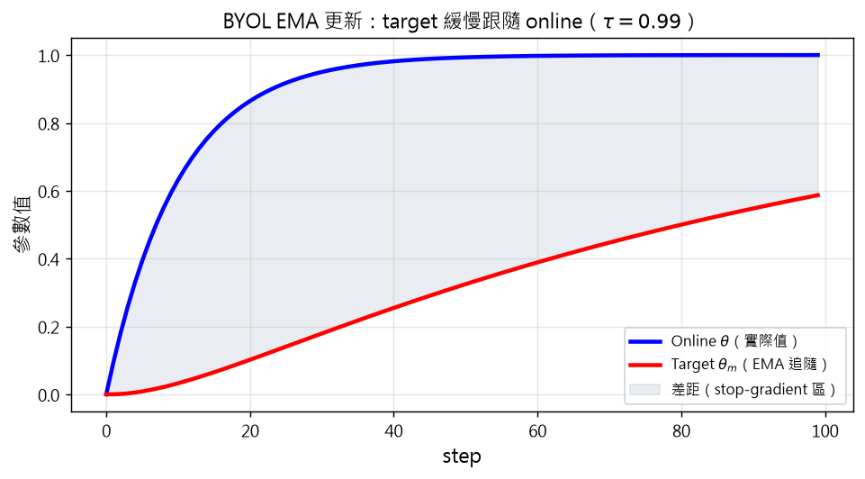
示意圖解：請對照 B0 準則（遮住文字仍能看出因果/反直覺）。
🤖 AI 生圖可用：重繪此示意圖的提示詞（結構化）
WHAT: x 軸是 training step（0–100），y 軸是參數值。兩條曲線：online（藍）從 0 指數上升到接近 1，target（紅）以 EMA 慢慢追上。兩者間灰色填色區。
WHY: 凸顯 BYOL 的 target network EMA 更新機制：target 緩慢跟隨 online，避免 collapse。
MUST show: (1) 兩條曲線（online 藍、target 紅）；(2) 灰色差距填色；(3) 圖例標示兩條曲線；(4) 標題含 τ=0.99。
AVOID: 不要把 online 與 target 標反、不要省略 EMA 標籤。
STYLE: clean scientific plot, white background, 標題「BYOL EMA 更新」。
互動 demo：BYOL EMA 更新曲線
$\theta_m^{(t)}\leftarrow\tau\theta_m^{(t-1)}+(1-\tau)\theta^{(t)}$
怎麼操作： 拖動 $\tau$ 滑桿觀察 EMA 速度。
觀察什麼： $\tau$ 接近 1 → target 跟得慢（穩定）；$\tau$ 小 → target 跟得快（不穩定）。
正確基準： $\tau=0.99, 100$ step 後 target = 86% of online；$\tau=0.9$：target = 99.9%。
BYOL（2020）不用 negative ，靠「asymmetry + momentum encoder + stop-gradient」避免 collapse。
兩個分支：online network （encoder $f_\theta$ + projector $h_\phi$ + predictor $g_\psi$）和 target network （encoder $f_{\theta_m}$ + projector $h_{\phi_m}$，沒有 predictor）。
Loss（cosine similarity 形式）：
$$\min_{\theta,\phi,\psi} \mathcal{L}(p, p', z, z') = \sum_{i=1}^b [\mathcal{D}(p_i, \text{stopgrad}(z_i')) + \mathcal{D}(p_i', \text{stopgrad}(z_i))]$$
其中 $\mathcal{D}(u, v) = \|u/\|u\|_2 - v/\|v\|_2\|_2^2 = 2 - 2\cos(u, v)$。
Target network 權重用 momentum（EMA）更新 ，不靠 backprop：
$$\theta_m \leftarrow \tau\theta_m + (1-\tau)\theta, \quad \phi_m \leftarrow \tau\phi_m + (1-\tau)\phi$$
$\tau$ 通常接近 1（如 0.99），target 緩慢跟隨 online。
三個避免 collapse 的機制（缺一不可）：stop-gradient + momentum（更新速度差異） + predictor（不對稱架構） 。
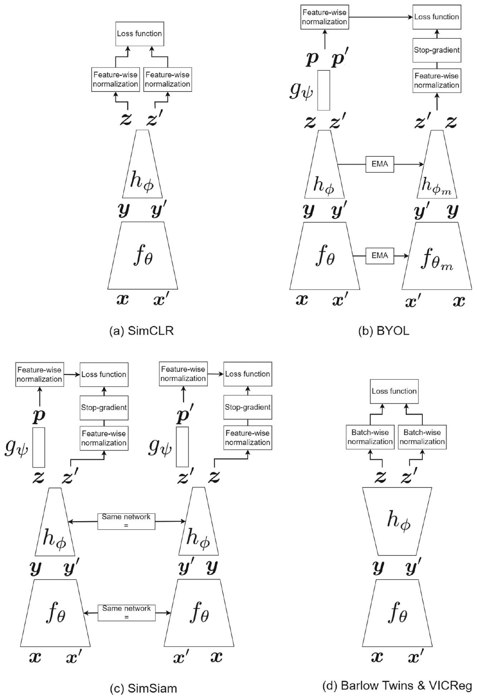
祕笈 教授祕笈：BYOL：momentum encoder + stop-gradient
5.6.4
Barlow Twins：cross-correlation matrix
−
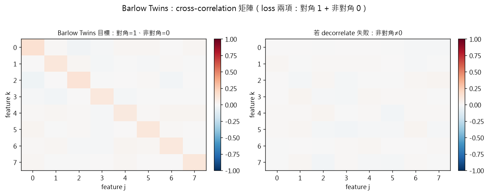
示意圖解：請對照 B0 準則（遮住文字仍能看出因果/反直覺）。
🤖 AI 生圖可用：重繪此示意圖的提示詞（結構化）
WHAT: 1×2 子圖，皆 8×8 矩陣。左「Barlow Twins 目標」：對角線 1.0、非對角線接近 0（decorrelate 成功）。右「decorrelate 失敗」：對角線 1.0、非對角線較大。紅藍色階 colormap。
WHY: 凸顯 Barlow Twins loss 兩項的目標：對角線 = 1（positive pair 同維度強相關）、非對角線 = 0（不同維度 decorrelate）。
MUST show: (1) 兩個 8×8 矩陣；(2) 紅藍 colormap（-1 到 1）；(3) 顯著的數值標註；(4) 標題對比。
AVOID: 不要用 jet colormap、不要省略數值標註。
STYLE: clean scientific plot, white background, 整體標題「Barlow Twins：cross-correlation 矩陣」。
互動 demo：Barlow Twins：cross-correlation 對角/非對角
$\mathcal{L}=\sum_j(1-c_{jj})^2+\lambda\sum_{j\neq k}c_{jk}^2$
怎麼操作： 拖動噪聲滑桿（模擬訓練時的隨機性）。
觀察什麼： 噪聲小 → 對角接近 1、非對角接近 0（decorrelate 成功）；噪聲大 → 反之。
正確基準： 噪聲=0.1：對角=0.995、非對角=0.005、loss 極小；噪聲=0.5：對角=0.875、非對角=0.125。
Barlow Twins（2021）用 cross-correlation matrix 學 embedding：
Cross-correlation（batch 內 $b$ 個 normalized positive pair）：
$$c_{jk} = \frac{\sum_{i=1}^b z_{i,j} z_{i,k}'}{\sqrt{\sum_{i=1}^b (z_{i,j})^2} \sqrt{\sum_{i=1}^b (z_{i,k}')^2}}$$
Loss 兩項：
$$\min_{\theta,\phi} \mathcal{L} = \sum_{j=1}^p (1 - c_{jj})^2 + \lambda \sum_{j=1}^p \sum_{k \neq j} c_{jk}^2$$
第一項最大化對角線 （$c_{jj}=1$，positive pair 同維度特徵完全相關）。
第二項最小化非對角線 （$c_{jk}=0$，不同維度特徵不相關 → decorrelation ）。
直覺：「同一資料的兩個 augmentation 應該在每個維度都強相關，但不同維度之間不應冗餘」。這個 decorrelation 機制 避免 collapse，不需要 negative 也不需要 momentum。
Loss 與 Pearson correlation 關係：$\text{Cor}(X, Y) = \text{Cov}(X, Y) / \sqrt{\text{Var}(X)\text{Var}(Y)}$，所以最小化非對角即最小化 covariance / decorrelate。
祕笈 教授祕笈：Barlow Twins：cross-correlation matrix
6
結論：metric learning 與 SSL 的現代地位
−
Metric Learning 與 SSL 的現代地位
從監督到無監督表示學習的橋樑
AE (1980s–2010s)
重建損失學表示
線性 → PCA
Siamese (2005–2015)
pair/triplet loss
Fisher 復活
SSL (2018–now)
SimCLR / BYOL /
Barlow / VICReg
現代應用：pretraining 主流（MAE、CLIP）
SSL 是 pretraining 預訓練的基礎方法學
metric learning 提供 robust 表徵
AE → Siamese → SSL → GNN/multimodal/generative 的演進路徑
示意圖解（inline SVG）。
Deep metric learning + SSL 是從監督式到無監督表示學習的橋樑 。從 autoencoder 到 contrastive 方法到現代 SSL 框架，這些方法重塑了「無 label 如何學 embedding 」的解法。
三大里程碑：
Autoencoders (1980s–2010s) ：重建損失學表示。線性 activation 退化成 PCA；nonlinear 學更強表示。Siamese + contrastive (2005–2015) ：pair/triplet loss 推 anchor-positive 近、anchor-negative 遠。Fisher 思想復活。SSL (2018–至今) ：SimCLR、BYOL、SimSiam、Barlow Twins、VICReg。2020 年起成為 pretraining 主流。
現代地位 (2025) ：
Pretraining 主流 ：MAE (Masked Autoencoders)、CLIP (vision-language) 都延伸 SSL 思想。Robust 表徵 ：metric learning loss 提供對抗擾動、domain shift 的穩定性。Graph、序列資料 ：下一章 (GNN) 用 graph metric learning；CLIP 把 metric 推到多模態。
SSL 與 metric learning 不再是單一領域的技巧，而是現代表示學習的基礎 ——設定了後續 GNN、multimodal、generative model 的舞台。
祕笈 教授祕笈：結論：metric learning 與 SSL 的現代地位
教授祕笈：全章地圖 — deep metric learning + SSL
同學，多數深度學習章節都假設有「標籤 y」可以監督訓練，但現實世界的資料 99% 是沒 label 的——網路上海量的圖片、文字、影片，誰來一一標註？本章要回答一個大問題：沒有 label 時，神經網路能不能自己學到有用的特徵表示？
我先打個比方。想像你是個偵探，面對一間有上百人的派對房，沒有任何名牌。你要做的不是認出「誰是誰」，而是學會「把人分群」——把長相、打扮、氣質相近的人聚在一起，相異的人拉開距離。整章做的事，就是教神經網路當這種「自動分群偵探」 。
整章三層架構：
§2 Reconstruction autoencoder ：最早期嘗試。Encoder 把 $x$ 壓成 code、decoder 從 code 重建 $\hat x$。Under-complete 可做 metric learning（線性時退化成 PCA），over-complete 加噪聲變 denoising AE。
§3-4 Siamese / classification 路線 ：有 label 時，用共享權重的孿生子網路，透過 contrastive 或 triplet loss 拉近同類、拉遠異類——這是 Fisher 判別分析在深度學習時代的復活。
§5 Self-supervised learning (SSL) ：無 label 時，用「資料增強 + 對比學習」自訂 label。SimCLR、BYOL、Barlow Twins 是三大代表方法。
請你動筆算算看：
一個 $d=1000$ 維的圖片，用 $p=128$ 維的 embedding 表示，壓縮比是多少？
（答案： $1000/128 \approx 7.8$，表示每張圖用原本 1/8 的空間就足夠描述「誰跟誰像」。）
常見誤解 ：
口訣 ：沒 label 不慌，自家增強當標籤；同類拉近、異類拉遠，學會特徵再下場。
掛勾 ：詳見 kp 2-4（早期 AE 嘗試）、kp 6-12（Siamese 與 triplet 家族）、kp 13-19（SSL 五大方法）；與 kp 20（現代地位）首尾相接。
教授祕笈：Reconstruction autoencoder
同學，reconstruction autoencoder 是最樸素 的非監督表示學習模型：把一張圖 $x\in\mathbb{R}^d$ 餵給 encoder $E$，壓成 code $f(x)\in\mathbb{R}^p$，再餵給 decoder $D$ 試圖重建 $\hat x$。Loss 就是「重建得有多像」。
我先打個比方。你把一本厚厚的原文書交給朋友，請他用 3 行摘要告訴你內容——你再拿這 3 行去推敲原文應該長什麼樣。如果他真的讀懂，3 行摘要就足以讓他「重建」原文大意。encoder 就是朋友「壓縮成 3 行」的能力，decoder 是他「從 3 行推回原文」的能力。
數學寫成：
$$\min_\theta \sum_{i=1}^b d(x_i, \hat x_i) + \lambda\Omega(\theta)$$
其中 $d(x,\hat x)$ 常用平方 Euclidean（MSE），$\Omega(\theta)$ 是 weight 正則項。
兩種關鍵變體：
Under-complete ：$p < d$。Code 比輸入窄，逼網路學「壓縮精華」。線性 activation 時直接退化成 PCA——這是原文特別強調的等價關係。Over-complete ：$p > d$。Code 比輸入寬，沒約束時網路會「投機取巧」：把每個輸入特徵原封不動搬到 code 再搬回去，學到 identity function 而非有意義表示。
請你動筆算算看：
一張 $d=784$（28x28）的灰階手寫數字圖，用 $p=32$ 維 code 表示。每張圖的壓縮率？（$784/32 = 24.5$ 倍。）
（答案： 壓縮率 $784/32 = 24.5$——每張圖用原本 1/24 的空間就試圖還原全部像素。）
常見誤解 ：
誤解 1：「AE 的 loss 越小越好」——半對。如果壓縮不夠（$p\ge d$），loss 會被 identity function 輕鬆壓到 0，但這沒學到任何東西。
誤解 2：「線性 under-complete AE = PCA」——對。原文證明：多層線性投影 $\mathbf{U}_e^\top\mathbf{x}$ 和 $\mathbf{U}_d\mathbf{z}$ 等價於單一線性投影，主成分分析就是它的線性極限。
口訣 ：encoder 壓、decoder 重建；窄於輸入才學得到，寬於輸入只會抄。
掛勾 ：詳見 kp 3（over-complete 的補救：denoising）、kp 4（under-complete 做 metric learning）、kp 5（換條路用分類 loss 學 embedding）。
教授祕笈：Denoising autoencoder
同學，over-complete autoencoder 最大的問題：沒約束時網路只會抄寫輸入 ，把每個像素原封不動搬運到 code 層再搬回來。這完全學不到表示，等於白訓練。
我先打個比方。標準 over-complete AE 像「背課文」——原文給你、要你逐字默寫，聰明的你當然直接照抄。但老師如果把課文故意蓋掉幾個字、加點雜訊 ，你還能默寫嗎？這時你必須「理解課文邏輯」才能補回缺字——這就是 denoising AE 的精神。
數學寫成：
$$\hat x = D(E(x + \varepsilon))$$
注意：loss 是「$\hat x$ vs 乾淨 $x$」，不是「$\hat x$ vs noisy $x$」——網路必須學會「濾掉噪聲、輸出原始」。
噪聲類型很多元：
Gaussian noise ：每個像素加 $N(0, \sigma^2)$ 的小擾動。Masking noise ：隨機把若干比例的像素歸零（類似 dropout）。Salt-and-pepper ：隨機把像素設成 0 或 255。
請你動筆算算看：
假設 $x = [0.5, 0.3, 0.8]$，加入 Gaussian noise $\varepsilon = [0.1, -0.2, 0.05]$，餵給 encoder。網路的目標輸出 $\hat x$ 應該接近誰？
（答案： $\hat x \approx x = [0.5, 0.3, 0.8]$，不是 noisy $x = [0.6, 0.1, 0.85]$。）
常見誤解 ：
誤解 1：「加噪聲只是 regularization」——半對。Dropout 算 regularization，但 denoising AE 的噪聲會改變任務本質（從「重建輸入」變「去噪重建」），學到的表示更 robust。
誤解 2：「DAE 一定要 Gaussian noise」——錯。Masking noise（隨機遮像素）效果常更好，因為它強迫學「context inference」——從周邊推測被遮處。
口訣 ：加噪、學去噪；想抄抄不了，只好學語意。
掛勾 ：詳見 kp 2（為何 over-complete 會退化）、kp 14（SSL 也用 augmentation 製造「正樣本」，思想一致）；與 kp 4（under-complete AE 的 metric 用途）對照看。
教授祕笈：Metric learning by reconstruction AE
同學，under-complete autoencoder（$p < d$）的 code 層天生就是 metric embedding space ——因為網路被迫把 $d$ 維輸入壓進 $p$ 維瓶頸，才能重建得好。這種「逼出來的壓縮」就是 metric。
我先打個比方。公司新進 50 位實習生，你只准用 5 個標籤（coding、溝通、創意、紀律、體力）來描述每個人。每個人都被迫在這 5 維上「壓縮呈現」自己——同類實習生 （例如同為工程師）會在這 5 維上特徵相近，不同類 （工程師 vs 業務）會被拉開。Code 層就是這 5 個標籤。
數學目標：
$$\min_\theta \sum_{i=1}^b d(x_i, \hat x_i) + \lambda\Omega(\theta)$$
訓練完，code $f(x) = E(x)$ 直接當 metric embedding 來用——兩筆資料的距離就是 $\|f(x_i) - f(x_j)\|^2$。
原文另一個重要洞察：NN 可視為「降維 + kernel methods」的串接 。
若某層 $d_1 \ge d_2$：這層做降維（feature extraction）。
若某層 $d_1 < d_2$：這層做 kernel method（map 到高維 RKHS）。
Nonlinear activation 提供非線性變化。
請你動筆算算看：
一個 3 層 encoder，shape = [784, 256, 64, 10]（$d_1\to d_2$ 維度分別 784→256, 256→64, 64→10）。哪些層做降維？哪些層做 kernel？
（答案： 784→256（降維）、256→64（降維）、64→10（降維）——本例全是降維。若中間有 [10, 64] 即升維，那就是 kernel。）
常見誤解 ：
口訣 ：窄瓶頸逼出 metric；降維升維交替跑，NN 就是降維加 kernel。
掛勾 ：詳見 kp 2（AE 基礎）、kp 5（換 classification loss 也能擠出 metric）、kp 6（Siamese 是更明確的 metric learning 設計）。
教授祕笈：Deep metric learning by classification
同學，最直覺的 metric learning 做法：直接用 cross-entropy 訓練分類網路，訓練完把最後一層丟掉，倒數第二層就是 embedding 。
我先打個比方。公司用 KPI 考核員工——分數高的留任、低的淘汰。雖然 KPI 只有「表現好/壞」兩類，但員工為了過關會自動發展出差異化的能力（業務型、工程型、管理型）。KPI 訓練完，員工身上那些「被逼出來的能力分布」就是 embedding ——不必再額外設計 metric loss。
實作流程：
設計網路：$x \to$ penultimate layer （embedding 層，$p$ 維） $\to$ classification layer（$c$ 類）。
用 cross-entropy 訓練整個網路。
訓練完成，丟掉 classification layer ，penultimate 層的輸出 $f(x)$ 就是 metric embedding。
為何這招有效？Cross-entropy 訓練迫使 penultimate 層學到「對類別有判別力的特徵」——而判別力天生意味著「同類相近、異類相遠」，正是 metric learning 的目標。
請你動筆算算看：
一個 10 類分類網路，penultimate 層 256 維、classification 層 10 維。訓練完用於人臉檢索——給一張臉 $x$，embedding 維度？
（答案： 256 維（penultimate 層的輸出）。Classification 層那 10 個 softmax 機率分數不是 embedding。）
常見誤解 ：
誤解 1：「classification loss 學不到 fine-grained metric」——半對。同類中若還有細分亞類（例如狗的不同品種），cross-entropy 不會拉近「同品種的兩隻狗」，這時要靠 triplet loss（kp 10）補強。
誤解 2：「embedding 維度 $p$ 越大越好」——錯。$p$ 太大 → 維度災難 + 過擬合；太小 → 表達力不足。常見 $p$ 在 64-512 之間視任務調整。
口訣 ：分類訓練、丟掉最後層；倒數第二層就是 metric embedding。
掛勾 ：詳見 kp 4（AE 路線擠 metric）、kp 9-10（contrastive / triplet loss 是更明確的 metric 設計）、kp 6（Siamese 是把這思想做成孿生網路）。
教授祕笈：Siamese 與 triplet networks
同學，Siamese network（孿生網路）是 deep metric learning 的招牌模型：多個子網路共享權重 ，每個子網路處理一個輸入點，輸出它在 embedding 空間的座標。
我先打個比方。想像驗鈔：銀行訓練一批「驗鈔員」，每位員工學會把鈔票「投影」到一個簡化特徵空間（紙張觸感、油墨位置、序列號形狀）。驗鈔時，同一張鈔票不論正反面、磨損程度、角度 ，所有員工給出的特徵應該相近；假鈔 則應該被拉得很遠。Siamese network 就是讓「所有驗鈔員共用同一套判斷標準」（= 共享權重）。
結構細節：
2 個子網路 ：處理 pair (anchor, positive/negative)，用 contrastive loss。3 個子網路 ：又稱 triplet network，處理 (anchor, positive, negative)，用 triplet loss。共享權重 = 所有子網路其實是同一個網路，只是被呼叫多次。
請你動筆算算看：
一個 Siamese network 用 ResNet-18 當 backbone（~11M 參數），2 個子網路。總參數量？
（答案： ~11M（不是 22M）。子網路共享權重，所以總參數量等於 1 個 ResNet-18。）
常見誤解 ：
口訣 ：孿生共享權，子網路輸出 embedding；同類拉近、異類拉遠，Fisher 思想復活。
掛勾 ：詳見 kp 7（pair/triplet 怎麼組）、kp 8（兩種實作方式）、kp 9-10（contrastive / triplet loss 公式）、kp 11-12（triplet 怎麼採樣）。
教授祕笈：Pairs 與 triplets of data points
同學，Siamese network 不像普通分類網路那樣單筆輸入、單筆輸出。它必須以 pair 或 triplet 形式輸入 ：每筆訓練樣本都是「一組相關的資料點」。
我先打個比方。教小孩認親戚，你不會只拿一張臉告訴他「這是叔叔」——你會拿出三張臉 ：「這是爸爸（anchor）、這是叔叔（positive，跟爸爸同一家族）、這是隔壁鄰居（negative，跟爸爸不同家族）」。小孩看了三張臉的「相對關係」，才學會 family resemblance。Triplet 就是這種「三張一組」的訓練單位。
資料組織方式：
Pair ：$(x^a, x^p)$ 為 anchor + positive（同類），或 $(x^a, x^n)$ 為 anchor + negative（異類）。Triplet ：$(x^a, x^p, x^n)$ 完整三件組。Loss 同時考慮「同類要近」與「異類要遠」。
怎麼選 anchor / positive / negative？
有 label 時 ：同類任一點為 positive，異類任一點為 negative。無 label 時（SSL） ：用 augmentation 把同一資料點做不同變化，當成「同類 positive」。
請你動筆算算看：
一個 dataset 有 1000 筆、10 類，每類 100 筆。若以每筆為 anchor、所有同類為 positive、所有異類為 negative，總共能組多少 triplet？
（答案： 每位 anchor 可配 99 個 positive × 900 個 negative = 89,100 個 triplet。1000 個 anchor 共 89,100,000 個——這就是為什麼需要 triplet mining 來取樣。）
常見誤解 ：
口訣 ：三件一組：anchor 為主、positive 同類、negative 異類；label 找不到就用 augmentation。
掛勾 ：詳見 kp 6（Siamese 為何需要三件組）、kp 9-10（不同 loss 怎麼用 pair/triplet）、kp 11（怎麼從大量 triplet 中挖出有資訊的）。
教授祕笈：Siamese network 實作
同學，學完 Siamese 的概念後，實作上有兩條路 ：訓練多個子網路（記憶體吃重）或訓練一個子網路（時間吃重）。兩者在數學上完全等價。
我先打個比方。餐廳出菜——一種做法是「每位廚師各炒各的菜」，但全部用同一份食譜（= 共享權重）；另一種做法是「只有一位廚師」，客人點三道菜他就分三次炒。兩種做法的菜味道一樣（權重同步），但前者需要更大的廚房（記憶體），後者需要更多時間（呼叫次數）。
實作方式對照：
方式一（多子網路） ：在記憶體中建 2 或 3 份子網路（共享參考同一份權重）。每個 batch 一次 forward 算出所有 embedding，loss 後只更新一份權重，再把更新複製到其他子網路。方式二（單子網路） ：只用一份子網路，triplet 三筆資料一筆一筆送進去算 embedding，再算 loss。時間多 3 倍，記憶體省 3 倍。
原文特別推薦方式二 ：因為子網路只有 2 或 3 個，時間成本可接受，但記憶體省下來能跑更大的 batch——而 metric learning 對大 batch 極敏感（kp 11-12 詳述）。
請你動筆算算看：
batch size 256，每個樣本是 224x224x3 的圖。用方式一（triplet）需要多少 GPU 記憶體？用方式二呢？
（答案： 方式一要同時存 3 × 256 張圖 = 768 張；方式二只要 256 張。方式二記憶體省 3 倍。）
常見誤解 ：
口訣 ：三份子網省時間、一份子網省記憶；原文推薦一份子網，batch 還能更大。
掛勾 ：詳見 kp 6（Siamese 概念）、kp 7（pair/triplet 輸入形式）、kp 11-12（為何大 batch 對 triplet mining 重要）。
教授祕笈：Contrastive loss（含 generalized）
同學，contrastive loss 是 Facebook 2006 提出的pair 級 loss ：給一對資料 $(x^1, x^2)$，判斷它們「同類」或「異類」，然後對 embedding 距離做不同的處罰。
我先打個比方。門口警衛查證件——他看兩個人是否是同一人。判斷方式：兩人特徵差很多 → 不同人（negative pair）；特徵差很少 → 同一人（positive pair）。但若警衛把不同人認得太近 （距離 < margin $m$），他會被懲罰——因為可能把外人誤認成家人。
數學寫成（標籤 $y_i = 0$ 表示同類、$y_i = 1$ 表示異類）：
$$L = \sum_{i=1}^b (1 - y_i) d(f(x^1), f(x^2)) + y_i [m - d(f(x^1), f(x^2))]_+$$
第一項（同類）：距離越小 loss 越小 ，鼓勵拉近。
第二項（異類）：距離要 > margin $m$ ，否則 hinge 項為正、產生 loss。
Generalized contrastive loss 把硬標籤 $y\in\{0, 1\}$ 換成軟標籤 $\psi\in[0, 1]$，例如 $\psi = (1 - \cos(x^1, x^2))/2$。半像半不像的 pair 也可訓練。
請你動筆算算看：
設 $d(f(x^1), f(x^2)) = 0.3$，$m = 1$。若 $y=0$（同類），loss 是？
（答案： $(1-0) \times 0.3 + 0 \times [\ldots] = 0.3$。距離小 → loss 小 → 鼓勵繼續拉近。）
同上距離，但 $y=1$（異類），loss 是？
（答案： $0 \times 0.3 + 1 \times [1 - 0.3]_+ = 0.7$。距離 < margin → hinge 項為正 → 還要拉遠。）
常見誤解 ：
誤解 1：「contrastive loss 一定要 hard label」——錯。Generalized 版本用 $\psi\in[0,1]$ 軟標籤，連「半像半不像」的 pair 都能訓練。
誤解 2：「margin $m$ 越大越好」——錯。$m$ 太大 → 訓練難收斂；$m$ 太小 → 拉得不夠開。實務上 $m$ 常在 0.5-2.0 間調。
口訣 ：同類拉近、異類拉遠超過 $m$；hinge 守住邊界線。
掛勾 ：詳見 kp 6-7（Siamese + pair 輸入）、kp 10（triplet loss 是另一條路）、kp 17（SSL 的 InfoNCE 是 contrastive 的延伸）。
教授祕笈：Triplet loss
同學，triplet loss 是 Google 2015 FaceNet 提出的三元組 loss 。和 contrastive 的差別：triplet 同時考慮 positive 和 negative ，讓兩者「相對距離」至少有 margin $m$。
我先打個比方。爸媽帶小孩認親戚：「這是你表哥（同類，positive），這是隔壁鄰居（異類，negative）。」小孩學到的不只是「表哥要近」，而是「表哥要比鄰居更近，而且要近得夠明顯 」——這個「夠明顯」就是 margin。整個訓練目標是：$d(a, p) + m \le d(a, n)$。
數學寫成：
$$L = \sum_{i=1}^b [d(f(x^a), f(x^p)) - d(f(x^a), f(x^n)) + m]_+$$
hinge 確保「$d(a, p) - d(a, n) + m < 0$」時 loss = 0（已經分得夠開）。否則差距不夠大 → 還有正 loss → 繼續拉。
最終理想：
$$d(f(x^a), f(x^p)) + m \le d(f(x^a), f(x^n))$$
請你動筆算算看：
$d(a, p) = 1, d(a, n) = 3, m = 1$。loss = ?
（答案： $[1 - 3 + 1]_+ = [-1]_+ = 0$。已經拉得夠開，loss = 0，這個 triplet 學不到東西。）
$d(a, p) = 2, d(a, n) = 2, m = 1$。loss = ?
（答案： $[2 - 2 + 1]_+ = 1$。差距 = 0，沒達到 margin 1，還要繼續拉遠 negative。）
常見誤解 ：
口訣 ：三元組同時看正負；正比負要近 margin，hinge 守住相對距離。
掛勾 ：詳見 kp 7（triplet 怎麼組）、kp 11（triplet mining 決定學得好不好）、kp 9（contrastive 是另一條路）、kp 18（BYOL 等 SSL 跳脫 triplet 框架）。
教授祕笈：Triplet mining（batch-all / batch-hard / batch-semi-hard）
同學，triplet loss 看起來美好，但實務上：大部分 triplet 都是「已經分得很開」的 trivial triplet ，對訓練毫無幫助。Triplet mining 就是設計採樣策略，挑出最有資訊的 triplet 。
我先打個比方。準備考試時，老師給你三類題目：太簡單的（已會）、太難的（聽不懂）、剛好需要動腦的 。只練「太簡單」浪費時間、只練「太難」打擊信心，練「剛好需要動腦」的進步最快。Triplet mining 就是在 mini-batch 裡挑出「最值得練」的 triplet。
三種主要策略：
Batch-all ：每個 anchor 配對所有同類 + 所有異類，總共 batch 大小平方級的 triplet 一起算 loss。簡單但慢。Batch-hard ：每個 anchor 只配「最難的」positive（同類裡最遠）+「最難的」negative（異類裡最近）。Loss 大、學得快，但要小心 hard negative 是 outlier 時訓練崩潰。Batch-semi-hard ：每個 anchor 配「所有同類 + 異類裡比 positive 還遠的最鄰近 negative」。比 batch-hard 穩，是 FaceNet 原文推薦。
請你動筆算算看：
batch size 32、4 類、每類 8 筆。Batch-all 一個 anchor 配幾個 triplet？
（答案： 每位 anchor 可配 7 個 positive（同類其他 7 筆）× 24 個 negative（異類 24 筆）= 168 個。32 個 anchor 共 $32 \times 168 = 5376$ 個 triplet。）
同上，batch-hard 一個 anchor 配幾個 triplet？
（答案： 每位 anchor 只配 1 個（最難 positive + 最難 negative）。32 個 anchor 共 32 個 triplet——比 batch-all 少 168 倍。）
常見誤解 ：
口訣 ：batch-all 全用、batch-hard 只挑最難、batch-semi-hard 顧穩定；hard 要看是不是 outlier。
掛勾 ：詳見 kp 10（triplet loss 公式）、kp 12（除了 batch 內 mining，還有 distribution-based sampling）、kp 17（SimCLR 也需要大 batch 才能採到好 negative）。
教授祕笈：Triplet sampling
同學，triplet mining（kp 11）著重「從 batch 內挑 extreme triplet」，但還有一條路徑——直接從資料分布抽樣 ，不必受限於 batch 內的點。
我先打個比方。餐廳備料，兩種策略：策略一是「打開冰箱看現有食材，憑直覺配菜」（in-batch mining）；策略二是「先想好菜單，再去市場買對應食材」（distribution-based sampling）。前者便宜但常配出怪菜，後者貴但每道菜都對味。
原文列出四種 sampling 策略：
極端距離採樣 ：刻意選「最極端」的 positive / negative（與 kp 11 batch-hard 一致）。隨機採樣 ：從同/異類隨機抽，簡單但可能抽到 trivial triplet。Distance-weighted sampling ：按距離機率分布抽樣（接近 1 的機率高），兼顧穩定與資訊量。貝氏更新採樣 ：依 posterior 機率抽樣，理論最嚴謹但實作複雜。
請你動筆算算看：
一個 dataset 100 萬筆、batch 256。若用隨機採樣，預期多少比例的 triplet 是 trivial（已分得夠開）？
（答案： 訓練初期可能 > 90%（網路還沒學，所以大部分 pair 都分得很開）；訓練後期可能 < 30%。這就是為什麼需要動態調整採樣策略。）
常見誤解 ：
口訣 ：mining 看 batch 內、sampling 看分布；前者快、後者穩。
掛勾 ：詳見 kp 11（batch 內 mining）、kp 7（triplet 基本概念）、kp 10（triplet loss 怎麼用採到的 triplet）。
教授祕笈：SSL 核心思想
同學，supervised metric learning 效果好，但前提是要有 label。現實世界 99% 的資料沒 label。SSL（self-supervised learning）給出解法：讓演算法自己生 label，再用 metric learning 訓練 。
我先打個比方。嬰兒學語言——沒人給他「這是名詞」「這是動詞」的標籤，但媽媽每天對他說話，他自己從語境、韻律、重複中學會語言結構。SSL 就是讓神經網路當「嬰兒」：沒人標資料，它自己從資料結構（augmentation、context、temporal order）裡挖出 label。
SSL 三個關鍵詞：
Positive samples ：同來源的不同視角（同一張圖的裁切/旋轉/調色）。Negative samples ：不同來源的點（其他圖）。Contrastive 目標 ：positive 在 embedding 空間拉近，negative 拉遠。
這個思想其實一世紀前就有了——Fisher 判別分析（1936）的「同類近、異類遠」一模一樣。SSL 是把這思想用 augmentation 自駕 label，在深度學習時代復活。
請你動筆算算看：
一張貓的照片 $x$，做兩個 augmentation $A(x) = x_1$、$A'(x) = x_2$。在 SSL 框架中，$(x_1, x_2)$ 是 positive 還是 negative pair？
（答案： positive pair。它們是同一張貓的不同視角，應該在 embedding 空間相近。）
常見誤解 ：
口訣 ：沒 label 沒關係、自家增強當標籤；同源拉近、異源拉遠。
掛勾 ：詳見 kp 14（augmentation 怎麼生 positive）、kp 15（negative 怎麼抽 + 衝突分析）、kp 16-19（SSL 四大方法實作）。
教授祕笈：Augmentation for creating positive samples
同學，SSL 最關鍵的設計：用 augmentation 把同一筆資料變出多個視角，當成「同類 positive」 。沒有 label 也能製造「同類樣本」。
我先打個比方。指紋辨識——你不會用「左手指紋 vs 右手指紋」當不同人（它們屬於同一個人），但也不會用「同一隻手指的同一份指紋」當唯一樣本（太脆弱）。你會用「同一隻手指、不同按壓角度/力道/位置的多次採集」 當同一人的多個樣本。Augmentation 就是這種「同一人不同視角」的模擬器。
常用 augmentation 種類：
幾何變換 ：隨機裁切、水平翻轉、旋轉、縮放、平移。色彩變換 ：亮度、對比、飽和度、色相調整、灰階化。遮蔽變換 ：隨機遮一部分像素（cutout、random erasing）。複合 ：SimCLR 證明「幾何 + 色彩 + 高斯模糊」三類並用效果最好。
每個 mini-batch 構造方式：
從 dataset 抽 $b$ 筆原始資料。
對每筆做兩次 augmentation，得到 $2b$ 個「視角樣本」。
$(x_i, x_i')$ 為 positive pair（同一原始）、$(x_i, x_j)$（$i \ne j$）為 negative pair。
請你動筆算算看：
batch size 128，每筆做 2 次 augmentation，總共幾個視角樣本？positive pair 數？negative pair 數？
（答案： $128 \times 2 = 256$ 個視角樣本；128 個 positive pair（每筆內部 1 對）；negative pair = $128 \times 126 = 16128$ 個（每個 anchor 配 126 個其他樣本）。）
常見誤解 ：
口訣 ：同一張圖換角度看，augmentation 製造 positive；太弱 trivial、太強失語意。
掛勾 ：詳見 kp 13（SSL 為何需要 positive）、kp 15（negative 怎麼配對）、kp 17（SimCLR 完整 SSL 框架就用這套 augmentation pipeline）。
教授祕笈：Negative samples（採樣衝突分析）
同學，SSL 不只要拉近 positive，還要拉遠 negative。但 negative 採樣有個微妙衝突：有些「被當 negative」的 pair 實際上是同類 ——只是因為沒 label 所以不知道。
我先打個比方。幼稚園老師要小朋友「找出不同的那個」——給三張貓照和一張狗照，問「哪個不一樣？」多數小朋友答得出。但若老師給的全是貓照，有些貓和貓是同品種、有些不同品種 ，硬要小朋友「找出最不像的」會出問題——他把同品種的貓認成「不同類」，學到錯誤的概念。SSL 在 batch 內把每筆都當 negative 時，也有同樣風險。
衝突分析：
風險來源 ：資料中同類樣本數量大時，batch 內 random 抽到同類 pair 的機率不為零。機率估算 ：若 dataset 有 $c$ 個類、batch size $b$，「batch 內抽到 $k$ 個同類」的機率 $\approx \binom{b}{k} (1/c)^k$。緩解 ：$c$ 遠大於 $b$（如 ImageNet 有 1000 類、batch 256）時，機率 $< 0.001$，可忽略。但 $c$ 小（例如只有 10 類）時，衝突率高達 10%。
請你動筆算算看：
$c = 1000$ 類、batch size $b = 256$。batch 內抽到至少 2 個同類的機率？（用 $P \approx \binom{256}{2} (1/1000)^2 = 32640 \times 10^{-6} \approx 0.033$，即 3.3%。）
（答案： 約 3.3%，可接受但不能忽略。ImageNet 實務上仍有微小比例的 false negative。）
常見誤解 ：
口訣 ：negative 不是越多越好；類別多 batch 小才安全，類別少要靠其他方法救。
掛勾 ：詳見 kp 13（SSL 為何需要 negative）、kp 17（SimCLR 大量用 negative）、kp 18（BYOL 故意不用 negative）。
教授祕笈：SSL network 架構
同學，SSL 的網路架構看似五花八門（SimCLR、BYOL、Barlow Twins…），其實核心就兩條主幹：encoder 提取特徵 + projection head 把特徵投到對比用的 latent 空間 。
我先打個比方。圖書館管理員的工作流程：先把每本書「讀過一遍記下重點」（= encoder 抽特徵），再把重點「寫成一張索引卡」（= projection head）。同類書的索引卡長得像（= 拉近），異類書的索引卡長得不像（= 拉遠）。索引卡用完可以丟，最後真正留下的是「讀過」的能力（= encoder 權重）。
SSL 通用架構：
Backbone（encoder） ：CNN 或 ViT，把 $x\in\mathbb{R}^d$ 編碼成 $h\in\mathbb{R}^p$（特徵向量）。Projection head ：小型 MLP，把 $h$ 再投到 $z\in\mathbb{R}^{p'}$（latent 表徵）。Loss 計算 ：在 $z$ 空間算 contrastive / InfoNCE / 其它 SSL loss。推理階段 ：丟掉 projection head，只用 backbone 輸出 $h$。
為何 projection head 要獨立？實驗發現：在 $z$ 空間算 loss，$h$ 反而學到更好的表示——projection head 像「過濾器」，吸收掉 loss 函式特有的偏見。
請你動筆算算看：
ResNet-50 backbone ~25M 參數，projection head 是 2 層 MLP（2048→2048→128）。總參數量？
（答案： ~25M（backbone）+ ~4.2M（projection）≈ 29M。推理時只保留 25M 的 backbone。）
常見誤解 ：
口訣 ：backbone 抽特徵、projection 投 latent；訓練用 $z$、推理用 $h$。
掛勾 ：詳見 kp 13-15（SSL 思想、augmentation、negative 採樣）、kp 17-19（三大 SSL 具體方法的差異都在 projection 之後）。
教授祕笈：SimCLR：InfoNCE loss
同學，SimCLR（2020）是 SSL 的代表方法，核心是 InfoNCE loss ——在 projection 空間裡，讓 positive pair 的 cosine 相似度趨近 1，所有 negative pair 的相似度趨近 0。
我先打個比方。一個班的學生寫作文，老師把每位學生的兩份草稿（positive pair）打分數「極高相似」（pull），但要把這位學生和其他所有同學的草稿（negative pair）打分數「極低相似」（push）。這個「打分數」的動作就是 cosine 相似度，而 InfoNCE 就是把所有分數打包成一個 softmax 式的 loss。
數學寫成（batch 內 $N$ 筆，每筆 2 個 augmentation，共 $2N$ 個樣本）：
$$L_i = -\log \frac{\exp(\text{sim}(z_i, z_i') / \tau)}{\sum_{j=1}^{2N} \mathbb{1}_{j \ne i} \exp(\text{sim}(z_i, z_j) / \tau)}$$
其中 $\text{sim}$ 是 cosine 相似度，$\tau$ 是 temperature 參數（越小越 sharp）。分子 = 與 positive 的相似度，分母 = 與所有樣本（含自己）的相似度總和。
請你動筆算算看：
1 個 anchor、1 個 positive（sim=0.9）、2 個 negative（sim=0.1, 0.2）、$\tau=0.1$。loss = ?
（答案： $\exp(0.9/0.1)=\exp(9)\approx 8103$；$\exp(0.1/0.1)=2.71$；$\exp(0.2/0.1)=7.39$。分子=8103，分母=$8103+2.71+7.39\approx 8113$。loss $= -\log(8103/8113) \approx 0.0012$。）
常見誤解 ：
誤解 1：「batch size 越大效果越好」——半對半錯。SimCLR 確實需要大 batch（$b \ge 256$）才能採到足夠 negative，但超過 4096 後效益遞減。
誤解 2：「$\tau$ 隨便設就行」——錯。$\tau$ 是關鍵 hyperparameter，$\tau=0.1$ 或 $0.5$ 效果差很多；太尖銳 ($\tau$ 小) 訓練不穩、太平滑 ($\tau$ 大) 學不到細節。
口訣 ：InfoNCE 看 softmax：positive 拉高分、negative 壓低分；大 batch + 適當 $\tau$ 是關鍵。
掛勾 ：詳見 kp 13-15（SSL 思想、augmentation、negative 採樣）、kp 16（projection head 設計）、kp 18（BYOL 跳脫 negative 框架）、kp 19（Barlow Twins 換掉 InfoNCE）。
教授祕笈：BYOL：momentum encoder + stop-gradient
同學，BYOL（Bootstrap Your Own Latent, 2020）是 SSL 的一個反直覺 突破：不用任何 negative samples ，單靠「學生模仿老師」就能學到好的表示。
我先打個比方。武術傳承：師傅（online network）每天示範動作，徒弟（target network）模仿。但徒弟不能直接抄——師傅每天只給一點點不同示範，徒弟得「自己想辦法跟上」。師傅的權重是徒弟的 EMA（指數移動平均）更新 ，所以師傅慢慢演化、徒弟追著學。整個過程沒有「標準答案」（= negative），純粹是「學生模仿老師」。
關鍵設計：
Online network ：encoder + projector + predictor。Predictor 是一個小型 MLP，給 online 那邊「多一點彈性」。Target network ：encoder + projector（無 predictor）。它的權重是 online 的 EMA：$\theta_{\text{target}} = m \cdot \theta_{\text{target}} + (1-m) \cdot \theta_{\text{online}}$，$m \approx 0.99$。Stop-gradient ：target 那邊不接 backprop，只接 forward 給 online 算 loss。Loss ：MSE 距離 $\|z_{\text{online}} - z_{\text{target}}\|^2$（先 normalize）。
為何不用 negative 也能學？關鍵是 target 不更新、predictor 只在 online 端，加上 momentum 更新讓 target 慢慢演化——這三者共同防止「trivial collapse」（所有樣本都投影到同一點）。
請你動筆算算看：
$m=0.99$。Online 更新一次後，target 權重變化比例？
（答案： $\theta_{\text{target, new}} = 0.99 \theta_{\text{target}} + 0.01 \theta_{\text{online}}$——target 只吸收 online 1% 的變化，所以演化非常緩慢。）
常見誤解 ：
誤解 1：「不用 negative 一定會 collapse」——半對。如果沒有 stop-gradient + momentum，會 collapse。但這兩者加上 predictor 就能避開。
誤解 2：「predictor 隨便放就好」——錯。Predictor 是關鍵：若 online 和 target 結構完全對稱，會 collapse；predictor 打破對稱性才讓 online 有「學的目標」。
口訣 ：學生模仿老師、老師慢慢變；不用 negative 也能學，關鍵在 stop-gradient 加 momentum。
掛勾 ：詳見 kp 15（為何 BYOL 想避開 negative 的 false negative 風險）、kp 17（SimCLR 對照：用大量 negative）、kp 16（SSL 通用架構）。
教授祕笈：Barlow Twins：cross-correlation matrix
同學，Barlow Twins（2021）換了個完全不同的角度：不靠 cosine 相似度、不靠 InfoNCE，直接用 cross-correlation matrix 逼近 identity matrix 。
我先打個比方。兩台錄音機在不同位置錄同一場演講——A 收音偏左、B 收音偏右。雖然原始波形不同，但兩台錄音機的頻譜分布應該高度一致 （都是同一場演講）。若用「cross-correlation matrix」對齊兩台錄音的每個頻段，理想結果是「對角線 = 1、其他 = 0」——也就是 identity matrix。Barlow Twins 就是把這思想搬到 embedding 空間：對齊同一筆資料的兩個 augmentation 視角。
Loss 拆兩部分：
Invariance term（對角線） ：希望 $z_{i,A}$ 與 $z_{i,B}$ 在每個維度都高度相關（cross-correlation 對角線 → 1）。Redundancy reduction term（off-diagonal） ：希望不同維度之間不相關 （cross-correlation 非對角線 → 0）。這避免「維度冗餘」——多個維度都編碼同一資訊。
請你動筆算算看：
$z_{i,A} = [1, 0]$、$z_{i,B} = [1, 0]$（已 normalize）。Cross-correlation matrix 的對角線 = ?
（答案： $\begin{pmatrix} 1 & 0 \\ 0 & 1 \end{pmatrix}$——理想 identity。Loss = 0。）
$z_{i,A} = [1, 0]$、$z_{i,B} = [0, 1]$。對角線 = ?
（答案： $\begin{pmatrix} 0 & 0 \\ 0 & 0 \end{pmatrix}$。對角線全 0 → invariance term loss 高、必須再訓練。）
常見誤解 ：
口訣 ：對角線拉近（invariance）、非對角線壓遠（redundancy）；cross-correlation 逼近 identity。
掛勾 ：詳見 kp 17（SimCLR 用 InfoNCE 對照）、kp 18（BYOL 不用 negative 對照）、kp 13-16（SSL 通用框架）。
教授祕笈：結論：metric learning 與 SSL 的現代地位
同學，2025 年回頭看 metric learning 與 SSL，它們已經從學術新星變成主流 pretraining 範式 。理解這一章，等於掌握現代 self-supervised pretraining 的理論基礎。
我先打個比方。早年學語言，要先學文法再學會話——supervised learning 走這條路。後來發現，小孩是「先大量聽別人說、再自己歸納語法」——SSL 就是這種「先觀察、後歸納」的路。現代 pretraining（GPT、CLIP、MAE）幾乎都走後者：先在無標籤海量資料上 pretrain、再用少量標籤 fine-tune。
metric learning 與 SSL 的現代應用：
MAE（Masked Autoencoder） ：把圖片 75% 像素遮住，讓網路學重建——SSL 思想延伸到 vision Transformer。CLIP（Contrastive Language-Image Pretraining） ：用 contrastive loss 對齊圖片和文字 embedding——把 SSL 思想從「同類 augmentation 拉近」延伸到「跨模態對齊」。BERT / GPT ：用 masked language modeling 或 next token prediction 自監督 pretrain——SSL 在 NLP 的化身。
metric learning 的 loss（contrastive、triplet、InfoNCE）則是 robust 表徵學習的基礎工具 ，應用在人臉辨識（FaceNet）、person re-ID、image retrieval、推薦系統等。
請你動筆算算看：
CLIP 用 4 億 image-text pair 訓練。若 batch size 32,768，每個 anchor 配多少 negative？
（答案： 32,767 個。CLIP 的成功很大程度來自「超大 batch → 大量 negative → 對比訊號強」。）
常見誤解 ：
口訣 ：metric 拉近拉遠是骨、SSL 自家標籤是肉；MAE、CLIP、BERT 都是 SSL 思想的延伸。
掛勾 ：詳見 kp 1（全章地圖的收束）、kp 13-19（SSL 五大方法的細節）；與 Ch12（VAE）共享「學 latent representation」思想，與 Ch09（Transformer）共享 pretraining 範式。